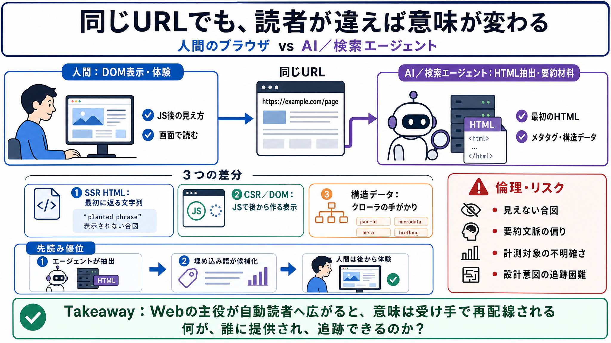

AI vs Human-Centered Web Design in 2026 - Haketi
# AI vs Human-Centered Web Design in 2026. For many business owners, this raises a pressing question: **If a machine can…

同じURLが、人間とAI／検索エージェントで別の意味を持ちうる瞬間を、観測ログのように読ませる。
従来のWebは「人間の画面」を前提に最適化されてきたが、今は自動読者が大量に流入し、同じページでも受け取りが変わりやすい。
DOM表示・体験が中心。
サーバHTML抽出・要約材料が中心。
この話は技術的には、(1)サーバHTML（SSR）と(2)JS／DOM生成（CSR）の差、(3)メタタグや構造化情報の解釈、の3点で説明できる。
最初に返る文字列。
JSで後から作る見え方。
クローラが拾う手がかり。
HTML内に「埋め込みフレーズ」があるのに、人間の体験では表示されない／DOMに反映されない対比が示される。
文章では、サーバHTML側にデータ属性付きテンプレート（例: data-agent-readable）があり、ソフトウェアには読めるが人間にはレンダリングされない、とされる。
エージェント向け文言が存在。
不必要として表示されない。
OAI-SearchBot（探索側）が先に来て回収し、その後に一般ブラウザが来る構図が示される。先に要約・索引が形成されれば、人間の理解が後追いになる。
エージェントがHTML抽出。
埋め込み語が候補化。
人間は後から体験する。
滞在時間などの計測が描写されるが、その計測対象が「誰の行動か」によって意味が変わる。単なる解析が、読み手別の最適化に見えてくる。
体験改善・広告最適化。
回収フロー／要約材料への接続。
このページは単なるUIや広告ではなく、機械的読者（クローラ／AI要約）の活動に“影響を与える装置”として読める。
同じ文章が同じように伝わる。
受け手別に見せ方・抽出が分岐する。
目的は断定できないが、少なくとも「人間の同意や理解の前提が弱まる」「埋め込み語が誤って拡散する」などの懸念が残る。
人間に見えない合図がある。
要約文脈が偏る可能性。
計測・ログの検証不足。
設計意図の追跡が困難。
Webの主役が「人間」から「自動読者」へ移ると、意味は受け手で再配線される。この作品はその違和感を体感させ、技術・倫理の追加検証を促す。
“同じページ”でも読者が違えば結果が違う。
何が誰に提供され、追跡できるのか？
# AI vs Human-Centered Web Design in 2026. For many business owners, this raises a pressing question: **If a machine can…
Title: The Rise of AI-Powered Browser Automation: Transforming Web Interaction in 2026 | PPTX # The Rise of AI-Powered B…
Title: Anti-Agent Web: AI Stealth vs Detection Wars 2025 | Articles | o-mega This guide provides an in-depth, practical …
Title: NeuraByte Labs | Experimental Projects # // Labs. Experimental projects exploring AI, design systems, and human-c…
### All-In-One Services. ### Backend Development. Web Planet Soft is the upcoming top website development company in Ind…